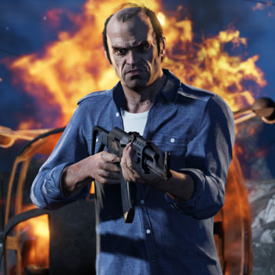

GTA V
Es gibt in GTA V drei Hauptcharaktere Michael De Santa, Trevor Philips und Franklin Clinton!
Michael De Santa (* 1965 als Michael Townley, vermutlich in Carcer City; möglicher Tod † 2013 außerhalb Los Santos; Michael De Santos in der Beta-Fassung) ist ein Bankräuber und Filmproduzent aus Grand Theft Auto V und einer der drei Protagonisten des Spiels.
Michael wurde vermutlich in Carcer City geboren, wo er auch aufwuchs. Er kam aus sehr einfach Verhältnissen und ist deswegen manchmal stolz darauf, was er erreicht hat. In der Mission Chaos erzählt er, dass er in der High-School Football gespielt hat. Im gleichen Satz sagt er, dass seine Karriere nicht so verlaufen ist, wie er es wollte, was bedeuten könnte, dass er eigentlich Football-Spieler werden wollte.
1988 begeht Michael seinen ersten Überfall in Carcer City. In den 1990er-Jahren trifft er als Kleinkrimineller auf Lester, Brad und Trevor. Sie schließen sich zu einer Gruppe zusammen und begehen Verbrechen.
Während des Überfalls auf eine Bank in Ludendorff, North Yankton und der anschließenden Flucht täuscht er mit Hilfe von Dave Norton vom FIB, seiner Frau Amanda, seinen Eltern und Schwiegereltern seinen Tod vor. Er lässt seine Komplizen Trevor Philips und Bradley Snyder (dieser stirbt während der Flucht) zurück.
Neun Jahre später, im Jahr 2013, ist Michael 48 Jahre alt und lebt mit seiner Frau Amanda und seinen beiden Kindern Tracey und James in einer Villa in Rockford Hills. Durch eine Abmachung mit dem FIB ist er zu seinem Reichtum gekommen. Aktuell ist er in einem inoffiziellen Zeugenschutzprogramm und führt ein idyllisches Leben, doch er hat ein sehr schwieriges Verhältnis zu seiner Frau Amanda und kann seine beiden Kinder im jugendlichen Alter nicht verstehen. Auf Grund des verschwenderischen Lebensstils seiner Frau und der Tatsache, dass ihn das häusliche Leben wahnsinnig macht, steigt er wieder in die alten Geschäfte ein, auch wenn er sich als Familienvater ausgibt. Seine besten Freunde sind die anderen Protagonisten Trevor Philips und Franklin Clinton. Entscheidet man sich am Ende der Story für seinen Tod, so wird er von Franklin getötet.
Trevor Philips (* zwischen 1963 und 1968 in Kanada; möglicher Tod † 2013 nahe Los Santos) ist ein ehemaliger Militärpilot und Berufsverbrecher aus Grand Theft Auto V und einer der drei Protagonisten des Spiels. Er kommt außerdem als Nebenfigur und Auftraggeber in Grand Theft Auto Online vor, ist aber dort nicht spielbar.
Er ist ebenso wie sein Freund Michael in der Mitte seiner 40er, ist allerdings das Gegenteil seines Kumpels Michael. Während Michael den Luxus genießt, lebt Trevor in einem heruntergekommenen Wohnwagen in Sandy Shores, Blaine County und im Gegensatz zu seinen Freunden geht er äußerst grob zur Sache und verliert des Öfteren die Nerven und/oder bekommt deshalb Ausraster. Michaels Frau Amanda scheint des Weiteren nicht viel von Trevor zu halten. Dass er stark drogen- und alkoholsüchtig ist, kümmert ihn nicht wirklich.
Er hatte eine schwierige Kindheit, die von Armut und Gewalt geprägt war. Seine Mutter war Stripperin und hatte zahlreiche Beziehungen. Sein Vater hatte ihn sehr schlecht behandelt und vermutlich geschlagen. Er verließ die Familie, als Trevor noch ein Kind war. Früher war Trevor Militärpilot, wurde jedoch auf Grund des negativen psychologischen Gutachtens nicht mehr zum Dienst zugelassen. Trevor erzählt Wade auf der Fahrt von Sandy Shores nach Los Santos, wie er kurz nach dem Rauswurf bei der Air Force Michael kennengelernt und sogleich kriminelle Aktivitäten mit ihm unternommen hat. Für einen Coup braucht es nicht viel Überzeugungsarbeit, um ihn zur Mitarbeit zu bewegen. Franklin lernt er später durch Michael kennen. Es braucht einige Zeit, bis er sich mit ihm gut versteht.
Zudem hat er einen Freund namens Ron, der im „angrenzenden“ Wohnwagen lebt und als paranoider Verschwörungstheoretiker gilt. Während der Story trifft man ihn des Öfteren in Trevors Wohnwagen an, den er vor den Lost und weiteren Gegnern schützen soll. Wenn Trevor nach der Story überleben sollte, findet man ihn ebenfalls vor oder im Wohnwagen.
Neben dem Eigenkonsum von Drogen treibt er in Blaine County selbst Handel mit Methamphetamin, wobei er sein Handelsmonopol („Trevor Philips Industries“) durchsetzt. Er verwendet auch viel Zeit darauf, das Los-Santos-Chapter des Lost Motorcycle Club zu bekämpfen.
Entscheidet man sich am Ende der Story für seinen Tod, so wird er von Franklin oder Michael nach einer Verfolgungsjagd zunächst angezündet und schließlich erschossen.

Franklin Clinton (* Anfang August oder Ende Juli 1988 wahrscheinlich in Los Santos; auch Frank oder The Kid genannt) ist einer der drei Protagonisten von Grand Theft Auto V sowie ein Kleinkrimineller. Er ist der jüngste der drei Protagonisten aus GTA V.
Franklin ist 25 Jahre alt (laut Nummernschild seines Autos (FC1988) und Motorrads (FC88)). Er ist wahrscheinlich in Strawberry geboren und aufgewachsen. Sein Vater verließ die Familie bereits früh und Franklin hat keinen Kontakt zu ihm. Seine Mutter war cracksüchtig und erzog ihren Sohn in einfachen Verhältnissen groß. In der Schule kümmerte sich Franklin wenig um den Unterricht und hatte seinen ersten Sex bereits mit 13. Schon als Teenager verlor Franklin seine Mutter. Ob sie an einer Überdosis starb oder als Bandenmitglied der Families erschossen wurde, ist nicht bekannt. Trotz des schwierigen Verhältnisses der beiden scheint Franklin immer noch traurig darüber zu sein. Zu Beginn der Handlung lebt er mit seiner Tante Denise in Strawberry. Er besuchte die Davis High School.
Nach einer Mission von Lester wechselt er seinen Wohnsitz in die Gegend Vinewood Hills.
Sein Geld verdiente er lange Zeit zusammen mit Lamar Davis als Autorückholer bei Premium Deluxe Motorsport, einem Autohaus. Der Besitzer der Firma ist der armenischstämmige Wirtschaftskriminelle Simeon Yetarian, der seit Jahren Zinswucher betreibt und die Fahrzeuge seiner Kunden von Lamar und Franklin „zurückholen“ lässt, wenn die Kunden bei der Ratenzahlung in Verzug kommen, was in Yetarians Geschäftsmodell fest angelegt ist.
Später lernt Franklin durch seinen Freund und Mentor Michael den Kriminellen Trevor Philips kennen und gemeinsam begehen sie Banküberfälle und andere Tätigkeiten mit kriminellem Hintergrund. Durch Michael lernt er auch Lester kennen, der später der Auftraggeber für Franklins Attentatsmissionen ist. Dadurch bekam Franklin sein Haus in Vinewood Hills.
Im Vergleich zu Trevor ist er zwar als Gangster nicht so erfahren, trotzdem hat er viele Stärken. Franklin ist klug und körperlich stark. Er kennt sich zudem sehr gut mit Scharfschützengewehren aus.